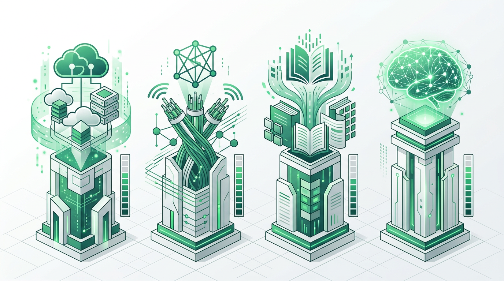

不管你是老人还是小孩，无论家住哪里、收入多少，都能"用得上、用得起、会使用"数字服务——让每个人都能享受数字时代的便利。2025年9月15日，深圳龙岗区在昇腾超节点暨CANN生态合作大会上正式发布"4T数字生活空间"（4T for Home）项目，以"数字平权"为核心理念，打造面向全区480万居民的"数字保障房"。

什么是"4T数字生活空间"？
"4T"代表四个"T级"基础设施，是将物理世界的四大基本权利系统性地映射到数字空间的创新实践——生存权对应T级存储空间、交流权对应T级网络流量、发展权对应T级内容资源、智慧权对应亿级人工智能Tokens。通过这四大基础设施的协同，确保每一位龙岗居民都能平等地享受数字化服务。
破解"数字鸿沟"：不让一个人掉队
在数字化快速推进的今天，老年人、低收入群体和偏远社区居民常常面临"用不上、用不起、不会用"的困境。4T数字生活空间通过梯度化设计和多元选择，避免"一刀切"问题，确保不同年龄、不同收入群体都能按需接入数字服务。
数字平权不是简单的设备发放或网络覆盖，而是要构建一套可持续的、梯度化的数字服务保障体系，让每一位居民在数字世界中都拥有平等的生存权、交流权、发展权和智慧权。
—— 龙岗区政务和数据局
技术底座：国产化与安全自主
4T数字生活空间采用"端-边-云"三级安全防护体系，构建"云-网-边-端"一体化底座，实现数据全生命周期自主安全。所有设备均采用国产化方案，依托昇腾AI处理器与Atlas硬件平台，保障居民数据的隐私安全和主权可控。

从"数字保障房"到数字平权的龙岗方案
4T数字生活空间被形象地称为"数字保障房"，正如住房保障解决了居者有其屋的问题，数字保障房旨在解决每位居民在数字世界的基本需求。龙岗区率先探索这一创新模式，为全国数字平权工作提供了可复制、可推广的"龙岗方案"。
项目以居民为中心，通过AI相册、本地AI对话、智能健康管理等贴近生活的应用场景，让数字技术真正融入百姓日常。未来，龙岗区将持续完善4T数字生活空间生态，推动数字服务均等化，让数字红利惠及每一位居民。
展望：让每个人享受数字时代的便利
龙岗区将以4T数字生活空间为抓手，持续深化数字平权实践，加快推进新型数据基础设施建设，探索数据要素赋能民生的新路径。通过政府引导、企业参与、居民受益的协同模式，将龙岗打造成为数字平权的标杆城区，让数字时代的阳光照进每一个家庭。